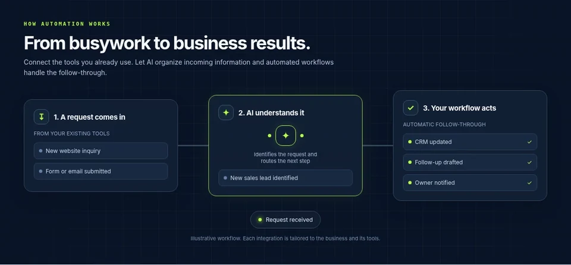

01 / AI integration
You are evaluating where AI could help.
Bring one task and a non-sensitive example. Discuss whether an AI-assisted step fits your tools, review needs, and data boundaries.
502ai / AI, IT & workflow automation
502ai helps small businesses connect AI with the tools they use, automate repetitive workflows, and get practical guidance on general IT. Start with a consultation focused on your goals and next steps.
Share your context
Only after you choose to start the intake.
Choose an available time
Times are shown with their published time zone.
Leave with a clear next step
Confirmation reflects exactly what was selected.

Who it's for
Examples help you describe the problem. The right approach depends on your tools, constraints, and review needs; outcomes are not guaranteed.
01 / AI integration
Bring one task and a non-sensitive example. Discuss whether an AI-assisted step fits your tools, review needs, and data boundaries.
02 / General IT consultation
Talk through your current tools, accounts, backups, connectivity, or an upcoming technology decision with an advisor.
03 / Workflow automation
Map a process such as a new inquiry becoming a task for staff review, including exception handling and a manual fallback.
Free IT readiness checklist
Review accounts, devices, updates, backups, connectivity, data protection, incident response, and technology ownership. No purchase is required.
Get the free small-business IT readiness checklist.
Review accounts, devices, backups, data protection, incident response, and technology ownership. One email; no purchase.
Consultation / service status
Scope and fees for a paid assessment are discussed before work is authorized. Share your goals and constraints to discuss which service area and next step fit.
Talk through your needsYour goals, current tools, constraints, recurring issues, and questions.
Which of AI integration, workflow automation, or general IT advice is relevant and what still needs scoping.
A next step based on the context you share; assessment scope and fee are discussed before paid work.
The process
01
The request is voluntary. Share only the contact details and context you want used to follow up.
02
The picker shows future appointments in the time zone selected by the owner.
03
The page shows the reserved time, request reference, and next step after you confirm.
FAQ
For more answers about service scope and next steps, read the service FAQ.
It is for small-business owners exploring AI integration, workflow automation, or general IT advice.
Your goal, current tools, one example of the task or issue, constraints, and questions are useful. A short summary is enough; do not share passwords or sensitive records.
You choose what context to submit, then select a future owner-published appointment time if one is available. After you confirm, the page shows the reserved time, request reference, and next step.
No. 502ai offers general IT consultation and advisory work, but does not manage a company’s IT department or provide ongoing managed services or help-desk coverage.
Yes. Request a consultation or email info@502ai.pro to discuss a paid assessment. Ask for the proposed scope and fee before authorizing work; no fixed price is stated here.
The consultation page will say when no owner-published times are available. You can still email 502ai at info@502ai.pro to ask about the next step.
It can explain the published consultation process and the situations described on this page. It should not invent services, prices, guarantees, testimonials, or appointment times.
Packages
One-time setups with no subscription. Buy a button and we'll follow up by email.
One-time
$149 one-time
We review how your business handles leads, follow-ups and repetitive tasks and send you a written plan of what to automate first.
One-time purchase. Delivered by email after checkout.
Provided by 502ai (AI integration, workflow automation & IT consultation).
Contact: info@502ai.pro · Secure checkout by Stripe
One-time
$497 one-time
A lead-qualification bot set up on your site that scores new inquiries hot, warm or cold and routes them to you.
One-time purchase. Delivered by email after checkout.
Provided by 502ai (AI integration, workflow automation & IT consultation).
Contact: info@502ai.pro · Secure checkout by Stripe
One-time
$29 one-time
Ready-to-edit one-page website templates for local businesses, delivered by email after purchase.
One-time purchase. Delivered by email after checkout.
Provided by 502ai (AI integration, workflow automation & IT consultation).
Contact: info@502ai.pro · Secure checkout by Stripe
Next step
Start with the context you have. The consultation is designed to make the next decision easier to see.